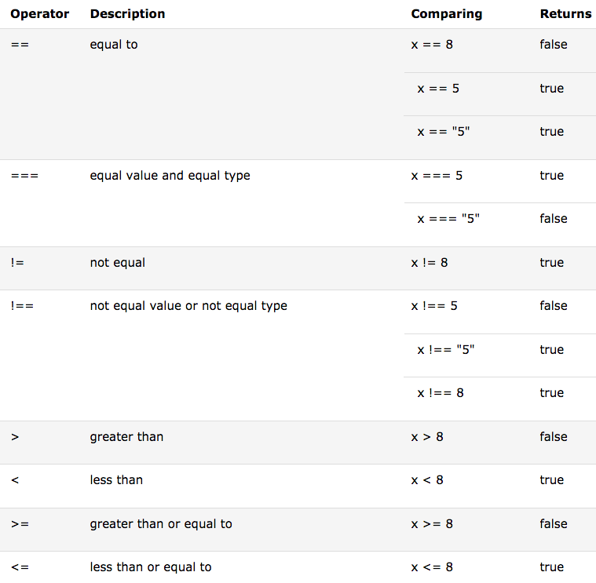
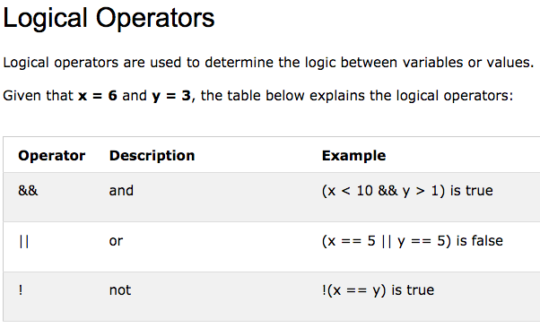

Comparison operators are used in logical statements to determine equality or difference between variables or values.
Given that x = 5, the table below explains the comparison operators:


JavaScript also contains a conditional operator that assigns a value to a variable based on some condition.
Syntax : variablename = (condition) ? value1:value2